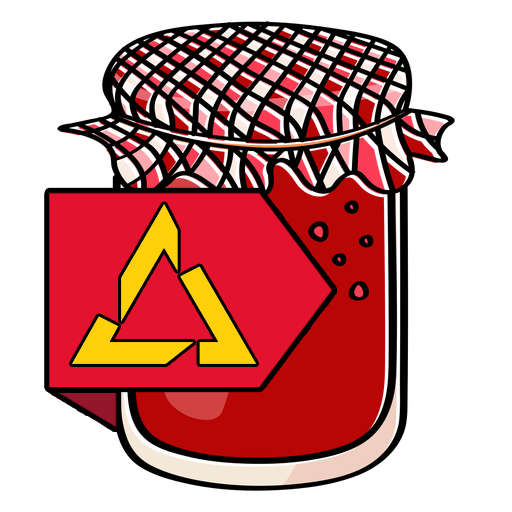

Alien Intern VR
-
Trolley Problem Productions, Mar 2023 - May 2023
- • Game Project 2 at Playgroundsquad.
- • Duration: 9 Weeks.
- • Contribution: Designed Gameplay, UX & UI.
- • Platform: Developed for the PSVR2 using Unreal 5.
- • Features: Physics-Based Interactions, Multitude of Job Modules, Voice-Acted Humor, Haptic Feedback & Eye-Tracking
- • Challenges: Dealing with undocumented hardware & software. Managing a larger group project. UX & Accesibility in VR.
- Game Landing Page!
- Alien Intern VR is a comedy/job simulator game built on the foundation of many different minigames called Modules, where the player has to get an internship (in VR) to get rid of their annoying roommate, Greg. The player has to complete these modules without fail to complete up to three hand-crafted days. And what if they fail? Well then they EXPLODE!
GamejamSquad2023
-
Game Contribution: Lost Memories
- • Gamejamsquad2023
- • Duration: 48 Hours.
- • Contribution, gamejam: Planned, hosted & managed the 48h gamejam. I also contributed with a game called Lost Phone together with two of my peers.
- • Contribution, Lost Phone: Designed gameplay & UI. Made most of the systems in Visual Scripting.
- • Platform: Developed for the PC using Unreal 5.
- • Features: Fully UI-based Gameplay & Heartthrobbing Story.
- • Challenges: Organizing and advertise a timed event for young adults. Working with new systems and tools under stressful conditions.
- Gamejam Landing Page
- In Lost Memories the player finds a phone on the sidewalk. Curious as to what is may contain they unlock it and snoop through the life of an indivudal whose life runs parallel with their own.
Theme: Paralell Worlds

Call of Dinner
-
Stewdio, Nov 2022 - Dec 2022
- • Game Project 1 at Playgroundsquad.
- • Duration: 6 Weeks.
- • Contribution: Designed gameplay & UI, Implemented systems using UE5 Blueprints.
- • Platform: Developed for the PC using Unreal 5.
- • Features: Adorable and murderous fruits and veggies, fast-paced gameplay, stunning visuals.
- • Challanges: Working with outside restrictions and in accordance to an already established concept.
- Download Page
- Call of Dinner is a Arcade FPS where the player plays as a chef who needs to survive an onslaught of rampaging fruits and veggies while cooking, serving and cleaning the kitchen and rack up a highscore before the timer, or their health runs out.